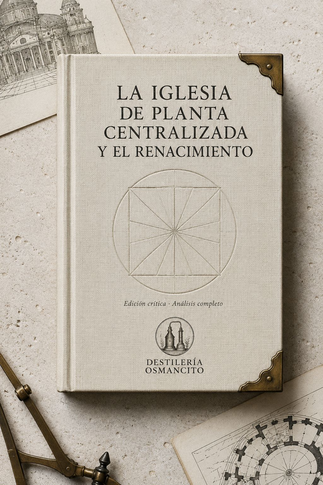
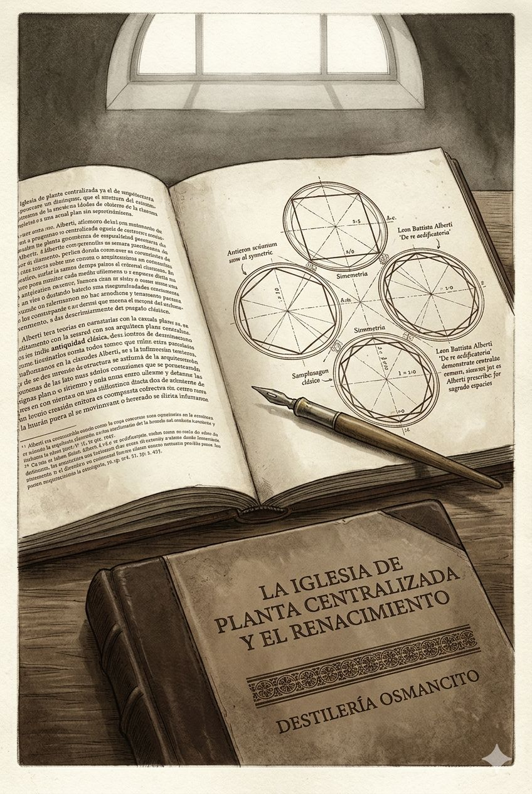
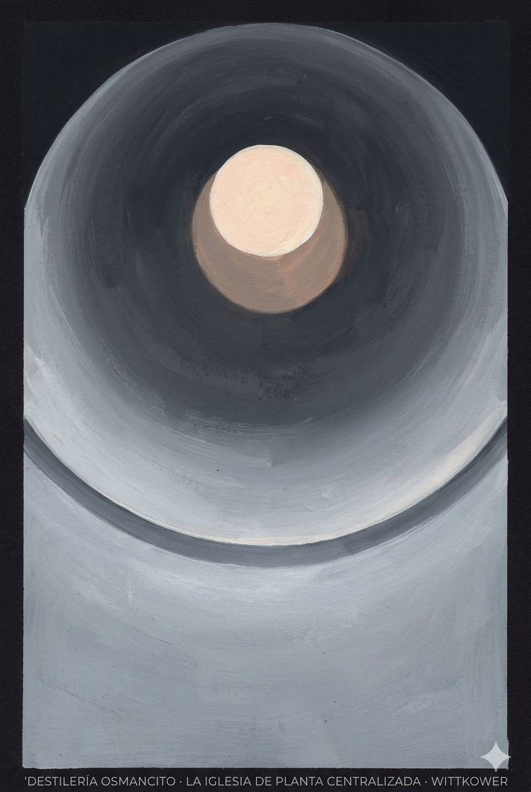
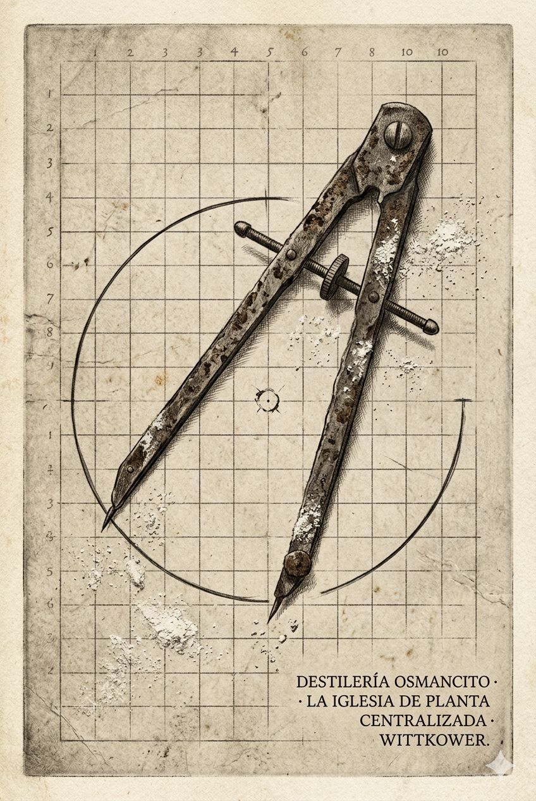

La Iglesia de Planta
Centralizada y el Renacimiento

Diagnóstico
Wittkower, The Centrally Planned Church and the
Renaissance
Primer contacto
Algo llega antes de que empiece la lectura: el peso de un argumento
que ya sabe que tiene razón. Wittkower no duda. El texto avanza como una
bóveda que se cierra sobre sí misma —cada sección un dovela que
encuentra su lugar—, y esa certeza arquitectónica es, ella misma, una
demostración del principio que sostiene. El corpus no tiembla. Es frío,
luminoso, geométrico. Pero debajo de la frialdad hay algo que arde: la
convicción de que la forma puede contener lo sagrado, de que el círculo
no es una decisión estética sino una necesidad metafísica. Eso no se
argumenta —se construye.
Lo construido
El argumento tiene la economía de una planta centralizada: todo
converge. Wittkower abre rechazando la lectura dominante —la
arquitectura renacentista como estilo profano, como eclecticismo sin
jerarquía— y convierte ese rechazo en el eje desde el que irradia todo
lo demás. La interpretación habitual sostiene que las formas clásicas
fueron aplicadas por igual a edificios sagrados, profanos y domésticos,
sin gradación de significado, reduciendo la arquitectura renacentista a
una arquitectura de forma pura. Wittkower dice: no. Y lo que sigue es la
demostración.
La estructura es genealógica y acumulativa. Alberti primero: la
primera recomendación sistemática de formas para templos comienza con
una eulogía del círculo, y las nueve figuras geométricas que propone
—círculo, cuadrado, hexágono, octógono, decágono, dodecágono y tres
desarrollos del cuadrado— están todas determinadas por el círculo. Luego
Francesco di Giorgio, Leonardo, Serlio, Cesariano, Pacioli, Zorzi. Cada
uno añade una capa: la psicológica, la visual, la metafísica. El
argumento se densifica sin perder claridad. Palladio lo cierra: la forma
más perfecta para la casa de Dios es la redonda, porque es la única
simple, uniforme, igual, fuerte y espaciosa; y cada punto de su
circunferencia está igualmente distante del centro, lo que demuestra la
unidad, la esencia infinita, la uniformidad y la justicia de Dios.
El corpus aguanta. No hay fisuras en la construcción. Lo que podría
ser debilidad —la escasez de iglesias perfectamente circulares frente a
la abundancia de retórica sobre el círculo— Wittkower lo absorbe:
Alberti había demostrado que todas las figuras poligonales derivan del
círculo, y era la cúpula elevada sobre el círculo lo que concentraba el
simbolismo de la iglesia renacentista.
Lo experiencial
El corpus produce algo específico: la sensación de estar dentro de un
edificio bien proporcionado. No hay ornamento retórico. La prosa de
Wittkower es blanca, como las paredes que recomienda Alberti. Esa
decisión estilística no es neutra —es argumental. El texto practica lo
que describe: una geometría que no necesita adorno porque la relación
entre las partes es suficiente.
Pero hay un momento donde la temperatura cambia. Hacia el final,
cuando Wittkower nombra lo que realmente se había transformado: lo que
había cambiado era la concepción de la divinidad —Cristo como esencia de
perfección y armonía había reemplazado al que sufrió en la Cruz; el
Pantocrátor había desplazado al Varón de Dolores. Ahí el corpus se
vuelve por un instante doloroso. Una línea. Después el argumento
continúa. Pero esa línea pesa más que muchas páginas.
Lo contextual
Wittkower escribe en los años cincuenta del siglo XX, en el umbral de
la historia del arte como disciplina consolidada, y contra Ruskin,
contra Burckhardt, contra Pevsner. La interpretación extrema de la
misrepresentación la ofrece Ruskin: una arquitectura pagana en su
origen, orgullosa e impía en su renacimiento, paralizada en su vejez.
Wittkower no responde con irritación —responde con evidencia. El gesto
es el del humanista que él mismo estudia: demostrar mediante proporción,
no mediante retórica.
El texto opera dentro de la tradición de Warburg y sus herederos: el
símbolo como categoría histórica real, no como proyección del
intérprete. La iglesia centralizada no es un símbolo porque Wittkower lo
decida —es un símbolo porque Pacioli llega a afirmar que las funciones
divinas tienen poco valor si la iglesia no ha sido construida con
proporciones correctas. Los propios actores lo dijeron. Wittkower los
escucha.
Recepción
Imagen de Presentación
Geometría Sagrada
El Libro Abierto

Imagen de Recepción
La Cúpula Sola

El Compás Abandonado

Frase de Recepción
Un libro que llega como llegan los axiomas: sin pedir permiso.
Apertura
Hay corpus que explican y corpus que demuestran. Este hace las dos
cosas con el mismo gesto. Wittkower no describe la iglesia centralizada
del Renacimiento — la construye en prosa, con la misma economía que
Alberti prescribía para los templos: nada que pueda quitarse sin
destruir el conjunto. Nombrarlo es distinto de resumirlo. Resumirlo
sería decir que refuta una tesis. Nombrarlo es reconocer que el
argumento tiene la forma de lo que argumenta.
Ficha
Título — La Iglesia de Planta Centralizada y el
Renacimiento Autor — Rudolf Wittkower
Año — 1949 (primera edición de Architectural
Principles in the Age of Humanism, de la que este texto es la Parte
I) Género — Ensayo de historia del arte / historia de
las ideas arquitectónicas Extensión estimada — ~12.000
palabras (32 páginas en el original impreso) Idioma
original — Inglés Palabra más frecuente con
contenido — church — confirma lo que el corpus declara
ser; pero la segunda es circle, y esa no está en el título. La
tensión está ahí. Ratio — El corpus tiene
aproximadamente 12.000 palabras. Este análisis ~900. Ratio: 13×
Sinopsis y figuras clave
Wittkower refuta la interpretación dominante que lee la arquitectura
renacentista como estilo profano y derivativo, sin jerarquía de valores.
Demuestra, mediante una genealogía de tratadistas y arquitectos del
siglo XV al XVI, que la planta centralizada no era una concesión
estética al paganismo sino la expresión más precisa de una teología de
la proporción: el edificio sagrado como imagen matemática del cosmos de
Dios. La trayectoria va de Alberti a Palladio, con Bramante como cima, y
el argumento se cierra sobre sí mismo con la misma geometría que
describe. El capítulo termina donde terminó históricamente el impulso:
con el Concilio de Trento y Carlo Borromeo declarando pagana la forma
circular y exigiendo el retorno a la cruz latina.
Leon Battista Alberti — arquitecto y teórico; su
De re aedificatoria (c. 1450) es el primer programa sistemático
de la iglesia ideal renacentista. Francesco di Giorgio
— arquitecto y tratadista; añade dimensión empírica y plantea el
problema litúrgico del altar en la iglesia centralizada.
Leonardo da Vinci — sus dibujos de plantas
centralizadas son, para Wittkower, documentos de religión renacentista
antes que estudios técnicos. Donato Bramante — el
mediador entre Alberti y Palladio; su Tempietto de San Pietro in
Montorio es el edificio que Wittkower llama el cumplimiento más perfecto
del programa. Andrea Palladio — el último gran
arquitecto humanista; formula con precisión lo que Alberti solo
insinuaba: la iglesia redonda como imagen de la justicia, unidad e
infinitud de Dios. Nicholas of Cusa — filósofo; su
definición de Dios como centro y circunferencia del círculo infinito es
el sustrato metafísico de todo el argumento. Luca
Pacioli — matemático; afirma que las funciones divinas son de
poco valor si la iglesia no ha sido construida con proporciones
correctas. Carlo Borromeo — cardenal contrarreformista;
declara la forma circular pagana y exige el retorno a la cruz latina —
el antagonista estructural del corpus.
Mapa de hechos
La historiografía anterior a Wittkower —Ruskin, Burckhardt, Pevsner—
había leído la planta centralizada renacentista como síntoma de
secularización: los arquitectos habrían sacrificado la funcionalidad
litúrgica en nombre de la belleza formal. Wittkower invierte el
diagnóstico: la planta centralizada era precisamente la forma más
sagrada disponible, porque el círculo era el símbolo matemático de Dios.
Alberti lo establece en el libro VII del De re aedificatoria:
la naturaleza prefiere la forma redonda, y la naturaleza es Dios. Las
nueve figuras geométricas que recomienda para los templos están todas
determinadas por el círculo. Francesco di Giorgio añade la taxonomía
empírica —redonda, rectangular, compuesta— y plantea la controversia
litúrgica sobre la posición del altar: en el centro porque Dios es
omnipresente, o en la periferia porque Dios está infinitamente lejos.
Leonardo dibuja sin teorizar, pero sus diseños son, para Wittkower, la
aplicación más fiel del programa albertiano. Bramante sintetiza: el
Tempietto y el proyecto para San Pedro son la cima histórica del
impulso. Palladio lo cierra teóricamente: el templo redondo demuestra la
unidad, la esencia infinita, la uniformidad y la justicia de Dios. El
sustrato filosófico es neoplatónico — Plotino, el Pseudo-Dionisio,
Nicolás de Cusa, Ficino — y la idea central es la correspondencia entre
microcosmos y macrocosmos: el hombre vitruviano inscrito en cuadrado y
círculo como símbolo de la simpatía matemática entre la criatura y el
cosmos de Dios. El impulso histórico se agota con el Concilio de Trento:
Carlo Borromeo declara la forma circular pagana en 1572 y exige la cruz
latina. Pero la iglesia centralizada sobrevive en el siglo XVII y XVIII,
porque el sustrato neoplatónico tenía aún larga vida.
Las tensiones que mueven
todo
¿Puede la forma geométrica contener lo sagrado, o solo
representarlo? Wittkower argumenta que para los arquitectos
renacentistas la respuesta era sí — pero esa afirmación depende de una
metafísica que el propio corpus no cuestiona. El argumento demuestra que
ellos lo creían; no demuestra que tuvieran razón. Esa diferencia no se
nombra. Opera en silencio.
La proporción que nadie puede ver. Alberti sabía que
las relaciones matemáticas entre planta y sección no podían percibirse
al caminar por el edificio. Su respuesta: el valor armónico es absoluto
e independiente de la percepción subjetiva. Eso convierte la belleza en
un asunto de ontología, no de experiencia. El corpus lo enuncia pero no
lo interroga — y es su punto más tenso.
La historia como apología. Wittkower construye una
genealogía impecable de Alberti a Palladio, pero la genealogía suprime
los disidentes, las obras no realizadas, las contradicciones litúrgicas
reales. La fisura es visible en el pie de página donde menciona que hay
buenas razones para suponer que Bramante planeó en realidad una iglesia
de cruz latina. Lo menciona. Y sigue adelante.
Mapa de profundidades
Vivo — El argumento genealógico: Alberti → Francesco di
Giorgio → Leonardo → Bramante → Palladio. Accesible en superficie, bien
articulado, verificable en las fuentes citadas.
Vivo — La refutación de la lectura secular: Ruskin, Pevsner
y Burckhardt están presentes desde la primera página y son el objetivo
explícito de todo el capítulo.
Sepultado — La experiencia del feligrés. El corpus habla del
arquitecto, del tratadista, del teólogo. El cuerpo que entra a la
iglesia y la recorre aparece solo en citas de Filarete. Requiere
destilación: ¿qué produce la planta centralizada en quien la habita, no
en quien la diseña?
Sepultado — La relación entre la teoría y la práctica
constructiva real. Wittkower lo menciona: la mayoría de las iglesias del
período no son circulares sino poligonales o de cruz griega. La
distancia entre el ideal retórico y el edificio ejecutado está ahí pero
cubierta por la velocidad del argumento.
Cerrado — La ansiedad ante la Reforma. El corpus es de 1949,
pero el impulso que describe pertenece al período anterior al Concilio
de Trento. La urgencia con que Wittkower defiende la seriedad religiosa
del Renacimiento podría leerse —propuesta, no certeza— como respuesta a
una crisis más próxima: la de demostrar que el humanismo y la fe son
compatibles en un siglo que acababa de ver lo contrario.
Ausente — La voz de los comitentes. ¿Qué querían los mecenas
que encargaron estas iglesias? ¿Compartían la teología neoplatónica de
los arquitectos? El corpus no lo pregunta.
Ausente — La experiencia sensorial del espacio. Luz,
acústica, temperatura. Wittkower construye su argumento desde el plano y
el tratado. El cuerpo en el espacio no existe en este texto.
Menú Emergente
1. Destilación del argumento
central
Cinco proposiciones. Sin genealogía. Sin citas.
I. La arquitectura renacentista no es un estilo
profano que aplica formas clásicas por igual a edificios sagrados y
civiles. Tiene una jerarquía de valores que culmina en lo sagrado. Quien
no la ve, no ve la arquitectura.
II. La belleza arquitectónica no es placer sensorial
ni preferencia subjetiva. Es la manifestación visible de proporciones
matemáticas que existen con independencia de quien las perciba. Su valor
es ontológico, no estético.
III. Las proporciones matemáticas del edificio
sagrado reproducen las proporciones del cosmos. El cosmos tiene esas
proporciones porque Dios las impuso al crearlo. El edificio bien
proporcionado es, por tanto, una imagen de Dios — no una representación,
una imagen: participa de lo que figura.
IV. De todas las figuras geométricas, el círculo es
la que más perfectamente encarna esa correspondencia, porque en él cada
punto de la circunferencia está igualmente distante del centro, y centro
y circunferencia son — en el círculo infinito — indistinguibles. El
círculo es el símbolo matemático de la unidad, la infinitud y la
justicia divinas.
V. La iglesia de planta centralizada es, por tanto,
la forma más religiosa disponible — no a pesar de su geometría, sino por
ella. Quien la llamó pagana confundió el símbolo con su origen
histórico. El origen no determina el significado. La forma sí.
Dónde podría ceder el edificio:
La proposición II es el punto de mayor tensión. Alberti sabía que las
relaciones matemáticas entre planta y sección no eran perceptibles al
caminar por el edificio. Su respuesta fue declarar el valor armónico
independiente de la percepción. Pero eso exige una metafísica que el
argumento da por supuesta sin demostrarla. Si el valor no se percibe,
¿qué lo garantiza? La respuesta implícita es: la filosofía neoplatónica.
Pero una vez que esa filosofía deja de ser el aire que se respira —como
ocurre después de Trento— la proposición no tiene suelo. El edificio
sigue siendo hermoso. Ya no es sagrado por geometría.
2. Lectura de la fisura
Bramante
El pie de página dice lo siguiente, casi de pasada: hay buenas
razones para suponer que Bramante planeó en realidad una iglesia de cruz
latina. Wittkower lo menciona. Y sigue adelante.
Eso no es un detalle. Es una fractura en el centro de la bóveda.
Todo el capítulo converge en Bramante como la cima histórica del
programa: el arquitecto que lleva la planta centralizada a su expresión
más perfecta, el mediador entre Alberti y Palladio, el punto donde
teoría y piedra coinciden. Wittkower llega a escribir que en 1505 la
santidad y singularidad de San Pedro no podían haberse expresado
mediante ningún otro tipo de planta. Es su afirmación más audaz.
Y entonces, en nota al pie, admite que Michelangelo declaró que todos
los arquitectos que se apartaron del plan de Bramante —al que él,
Michelangelo, regresó con su planta de cruz griega— se habían apartado
de la verdad. Cita el informe contemporáneo de Egidio da Viterbo que
prueba que Bramante tenía conceptos centralizados en mente. Menciona que
la proliferación posterior de iglesias de cruz griega sería difícil de
explicar sin el gran ejemplo de Bramante. Y concluye: he llegado a mis
conclusiones después de sopesar cuidadosamente toda la evidencia
disponible.
Lo que hace ese pie de página es visible: convierte la tesis en una
apuesta. Wittkower no demuestra que Bramante planeó una cruz griega —
argumenta que debió haberlo hecho, porque el programa lo exigía. La
evidencia histórica es parcial y contradictoria. El único plano
conservado, en los Uffizi, muestra solo la mitad del diseño y admite una
reconstrucción diferente.
Esto tiene consecuencias para el conjunto. Si la cima del argumento
es una hipótesis histórica presentada como conclusión, el arco
genealógico —Alberti, Francesco di Giorgio, Leonardo, Bramante,
Palladio— no es una cadena de hechos sino una cadena de interpretaciones
crecientemente comprometidas con una tesis previa. Wittkower lee a
Bramante desde Alberti y desde Palladio, no desde la evidencia
documental de Bramante. El argumento es circular en el sentido técnico:
la conclusión organiza las premisas.
Lo notable es que esa circularidad no destruye el corpus. Lo que hace
es revelar su naturaleza real: no es historia de la arquitectura en
sentido positivista. Es una lectura — comprometida, brillante,
argumentalmente cerrada — que produce conocimiento sobre el período
precisamente porque no pretende ser neutral. La fisura no es un defecto.
Es la señal de que hay algo vivo adentro.
3. Excavación de la
experiencia del feligrés
El corpus habla de arquitectos, tratadistas y filósofos. El cuerpo
que entra al edificio aparece dos veces, brevemente, en citas de
Filarete:
Construimos nuestras iglesias en alto, para que quienes entren se
sientan elevados y el alma pueda ascender a la contemplación de
Dios.
Al mirar un círculo, la mirada recorre instantáneamente su
contorno sin interrupción ni obstáculo.
Eso es todo. Dos frases. El resto es planta, proporción, tratado.
Lo que esas dos frases abren, y el corpus no sigue, es una
fenomenología del espacio centralizado desde adentro. No desde el plano
— desde el cuerpo que lo habita.
El primer efecto es la desorientación del eje. En la iglesia
basilical el cuerpo sabe adónde va: hacia el altar, hacia el fondo,
hacia arriba y adelante. La dirección es una instrucción. En la iglesia
de planta centralizada el cuerpo llega al centro y se detiene. No hay
fondo. Hay una circunferencia equidistante en todas las direcciones. El
espacio no te lleva — te contiene. Esa diferencia no es estética. Es
corporal antes de ser simbólica.
El segundo efecto es vertical. La cúpula sobre el centro hace que la
mirada, privada de dirección horizontal, ascienda. No hay instrucción
explícita — la geometría la produce. El óculo, si existe, es el destino
natural del ojo: el único punto singular en un espacio que de otro modo
sería pura equivalencia. Luz desde arriba. Filarete lo dijo: el alma
puede ascender a la contemplación de Dios. Lo que no dijo es que la
planta lo produce mecánicamente, sin mediación voluntaria.
El tercer efecto es la escala. La iglesia centralizada tiende a ser
más pequeña que la basilical para el mismo programa litúrgico, porque la
circunferencia limita la capacidad de reunión. El feligrés no está en
una nave de trescientas personas mirando hacia el mismo punto — está en
un espacio donde todos pueden verse, donde el centro es visible desde
cualquier posición. Eso cambia la liturgia aunque el texto del rito no
cambie. La controversia sobre la posición del altar que registra
Francesco di Giorgio no es litúrgica en sentido estrecho — es espacial.
¿Dónde se pone el punto focal en un espacio que no tiene frente?
Lo que el corpus sepulta al hablar solo de proporciones abstractas es
que esas proporciones producen efectos concretos en el cuerpo. La
experiencia sensorial no es ornamento de la idea — es su mecanismo de
transmisión. Sin el cuerpo que la recorre, la planta centralizada es un
diagrama. Con él, es un argumento que se experimenta antes de
entenderse.
4. Genealogía inversa
Carlo Borromeo, en las Instructionum Fabricae ecclesiasticae
de 1572, declara la forma circular pagana y recomienda el retorno a la
formam crucis de la cruz latina. Es el antagonista estructural
del corpus. Leer hacia atrás desde él.
¿Qué es exactamente lo que Borromeo declara pagano?
No la geometría en abstracto. Lo que declara pagano es la asociación
entre forma circular y templos de la antigüedad no cristiana — la misma
asociación que, para Alberti, era una continuidad legítima entre la
arquitectura sagrada antigua y la cristiana primitiva. Borromeo y
Alberti comparten el mismo hecho histórico: los templos circulares
romanos existieron. Difieren en lo que ese hecho significa para el
presente.
Para Alberti, la continuidad es sagrada: el Emperador Constantino
había fundido la antigüedad pagana con el espíritu de la fe primitiva, y
volver a esas formas era recuperar ese momento de síntesis pura. Para
Borromeo, esa síntesis no es recuperable ni deseable: la Reforma ha
contaminado de ambigüedad todo lo que no sea inequívocamente cristiano,
y la cruz latina es inequívoca.
Lo que la declaración de Borromeo confirma, entonces, es precisamente
la tesis de Wittkower: la planta centralizada tenía un
significado religioso específico, tan específico que la Contrarreforma
necesitó prohibirlo. No se prohíbe lo que es neutro. Se prohíbe lo que
significa algo que ya no se quiere que signifique.
Pero la declaración de Borromeo también la complica. Si el mismo
símbolo puede significar cosas opuestas según quién lo interprete
—símbolo de la perfección de Dios para Alberti, símbolo del paganismo
para Borromeo— entonces el símbolo no porta su significado de forma
intrínseca. Lo porta en un contexto cultural específico. Y eso debilita,
al menos parcialmente, la proposición más fuerte de Wittkower: que la
correspondencia entre círculo y divinidad era una necesidad metafísica,
no una convención histórica.
La genealogía inversa revela que el argumento de Wittkower tiene
límites temporales que él no declara. Es verdad para el período
1450-1530. Deja de serlo —o se vuelve contestado— después de Trento. El
corpus trata esa ruptura como el fin de una era. Pero podría leerse
también como la evidencia de que la teología proporcional era más frágil
de lo que el argumento sugiere: bastó una generación para que la misma
forma pasara de imagen de Dios a imagen del paganismo.
5. Confrontación con el
ausente
El corpus no pregunta qué querían los comitentes. Trabaja con
arquitectos y tratadistas. La pregunta es: ¿qué evidencia existe, fuera
de los tratados, de que los mecenas compartían la teología proporcional
de los arquitectos?
Lo que el corpus puede mostrar: los comitentes encargaron
estas iglesias y las pagaron. Algunas se construyeron con modificaciones
que los arquitectos habrían rechazado. La controversia sobre el coro de
la SS. Annunziata en Florencia es el único caso donde el corpus registra
una voz crítica desde fuera del círculo profesional: alguien que objeta
no la geometría sino el blanco sin ornamento, la austeridad que haría a
la iglesia aparecer pobre y desolada. Esa voz es anónima en el
corpus. Es la única.
Lo que el corpus no puede mostrar: que Francesco Sforza, los
Medici, Julio II o los municipios que financiaron las iglesias de la
lista de la página 20 compartían la lectura neoplatónica del círculo.
Los mecenas tenían razones políticas, devocionales, de prestigio
dinástico, de competencia entre ciudades. Algunas coincidían con la
teología proporcional. Otras no necesitaban coincidir para que el
edificio se construyera.
La ausencia importa porque afecta la escala del fenómeno que
Wittkower describe. Si la teología proporcional era la convicción de un
círculo de intelectuales y arquitectos —Alberti, Leonardo, Bramante,
Pacioli, Zorzi— y no una creencia compartida por la cultura que los
financiaba, entonces el programa era más estrecho y más frágil de lo que
el argumento sugiere. Seguiría siendo históricamente real. Pero no sería
el espíritu de una época — sería el programa de un grupo.
Hay una pregunta que el corpus no puede responder con su evidencia:
¿construyeron estas iglesias porque el círculo revelaba a Dios, o
construyeron estas iglesias y luego Alberti escribió que el círculo
revelaba a Dios? La dirección de la causalidad entre práctica y teoría
es el borde exacto de lo que Wittkower puede demostrar. Lo que está al
otro lado de ese borde no es mentira. Es silencio.
6. Síntesis
microcosmos-macrocosmos
La cadena filosófica que sostiene todo el edificio argumental. Cada
eslabón y lo que añade.
Pitágoras — Todo es número. Las relaciones
matemáticas son la estructura profunda de la realidad, no una
descripción de ella. El cosmos no obedece proporciones —
es proporciones.
Platón (Timeo) — El Demiurgo construyó el
mundo como una esfera perfecta, equidistante en todas direcciones desde
el centro hacia la extremidad, la figura más perfecta y uniforme de
todas. El mundo así creado fue un dios bienaventurado. La
geometría no describe el cosmos — el cosmos es geometría
divina.
Plotino — Dios como sphaera intelligibilis:
esfera inteligible cuyo centro está en todas partes y cuya
circunferencia no está en ninguna. La figura del círculo infinito como
imagen del Uno que es simultáneamente centro de todo y más allá de
todo.
Pseudo-Dionisio el Areopagita — El Uno se comunica
mediante jerarquías de participación. Lo sensible participa de lo
inteligible. La forma visible puede ser vehículo de lo invisible si está
construida según las proporciones que unen ambos órdenes. La
arquitectura entra aquí como posible vehículo — aunque Dionisio no lo
dice explícitamente.
Nicolás de Cusa — Transforma la jerarquía estática
de esferas escolástica en un universo sin centro físico ni ideal,
uniforme en sustancia. En ese universo la matemática es el único
vehículo de conocimiento de Dios. Dios debe ser envisagé a
través del símbolo matemático. El círculo infinito, en el que centro,
diámetro y circunferencia son idénticos, es la imagen más precisa del
máximo inconcebible.
Marsilio Ficino — Mediador del neoplatonismo griego
al humanismo florentino. Dios como centro verdadero del universo y
simultáneamente como circunferencia que todo lo supera. La
correspondencia entre microcosmos y macrocosmos: el alma humana como
imagen del cosmos, el cosmos como imagen de Dios.
Vitruvio (De architectura, Libro III) — El
hombre bien proporcionado inscrito en cuadrado y círculo. Las
proporciones del templo deben corresponder a las del cuerpo humano. El
templo proporcional es proporcional porque el hombre es proporcional, y
el hombre es proporcional porque fue creado según las proporciones del
cosmos. La cadena se cierra: templo — hombre — cosmos — Dios.
Leon Battista Alberti — Primera síntesis
arquitectónica de toda la cadena. La belleza es integración racional de
proporciones en que nada puede añadirse ni quitarse sin destruir la
armonía del conjunto. Esa armonía es la misma en música, en geometría y
en el cosmos. El arquitecto que la realiza en piedra produce un eco
visible de la armonía celestial. La naturaleza aspira a la perfección —
y la naturaleza es Dios.
Luca Pacioli — El cuerpo humano contiene todas las
medidas y sus denominaciones, y en él se encuentra toda razón y
proporción por la cual Dios revela los secretos más íntimos de la
naturaleza. Las dos figuras perfectas —círculo y cuadrado— son
inseparables del cuerpo humano y, por tanto, de la arquitectura sagrada.
Las funciones divinas son de poco valor si la iglesia no ha sido
construida con proporciones correctas.
Francesco Zorzi — El hombre en la figura del círculo
es una imagen del mundo. El círculo no solo corresponde al cosmos
visible sino que revela, a través de él, la relación invisible entre el
alma y Dios: Dios como sphaera intelligibilis. La geometría
vitruviana leída a través de Plotino y Ficino.
Andrea Palladio — Síntesis final y más explícita. La
forma redonda es la única simple, uniforme, igual, fuerte y espaciosa.
Cada punto equidistante del centro demuestra la unidad, la esencia
infinita, la uniformidad y la justicia de Dios. Los pequeños templos que
construimos deben asemejarse al grandísimo que Dios completó con una
sola palabra. El templo centralizado es el eco humano del cosmos
divino.
Lo que cada eslabón añade al siguiente:
Pitágoras pone el número como sustancia. Platón convierte el número
en cosmogonía. Plotino convierte la cosmogonía en teología del círculo.
El Pseudo-Dionisio abre la posibilidad de que lo visible participe de lo
invisible. Cusa elimina el centro físico del cosmos y hace del símbolo
matemático el único acceso a Dios. Ficino traduce todo eso al humanismo
florentino. Vitruvio conecta la cadena filosófica con el cuerpo humano y
con el templo. Alberti convierte la filosofía en programa
arquitectónico. Pacioli la cuantifica. Zorzi la mística. Palladio la
declara.
Al final de la cadena, el círculo trazado en piedra no es una
preferencia estética ni una referencia histórica a la antigüedad. Es un
argumento teológico construido en espacio habitable.
Joyería
El corpus es un capítulo único de aproximadamente 12.000 palabras,
dividido en cinco secciones numeradas. Se trata como un solo estuche con
escala de 5 a 7 joyas.
El fragmento
Un historiador entra a un debate y lo da por cerrado antes de que el
lector sepa que estaba abierto. La pregunta que organiza todo el
capítulo es simple y perturbadora: ¿era la arquitectura del Renacimiento
un estilo profano, o tenía una jerarquía de valores que culminaba en lo
sagrado? La respuesta dominante, en 1949, era la primera. La
arquitectura renacentista había sacrificado la función litúrgica en
nombre de la belleza formal. El círculo era pagano. El Renacimiento
había reemplazado a Dios por el hombre.
El capítulo desmonta esa lectura con paciencia de orfebre. Empieza en
Alberti —el primer tratadista que formula un programa completo para la
iglesia ideal— y avanza por Francesco di Giorgio, Leonardo, Serlio,
Pacioli, Zorzi, hasta llegar a Palladio, que lo cierra con una precisión
que Alberti nunca alcanzó. La genealogía no es decorativa: cada autor
añade una capa —psicológica, visual, metafísica— sobre la misma
convicción central: el círculo es la imagen matemática de Dios, y el
edificio que lo reproduce es un argumento teológico construido en piedra
habitable.
A lo largo del recorrido aparecen las fracturas: la controversia
sobre la posición del altar, la escasez de iglesias perfectamente
circulares frente a la abundancia de retórica sobre el círculo, el pie
de página donde el autor admite que Bramante pudo haber planeado en
realidad una cruz latina. El argumento las absorbe todas. Lo que no
absorbe —lo que deja caer en una sola línea hacia el final— es la frase
más dolorosa del capítulo: lo que había cambiado en el Renacimiento no
era la geometría sino la concepción de Dios. El Pantocrátor había
reemplazado al Varón de Dolores. Cristo como esencia de perfección y
armonía había desplazado a Cristo crucificado. Una línea. Y el argumento
continúa.
Las joyas
Lo que la naturaleza prefiere
La naturaleza, afirma el tratadista, disfruta de la forma redonda por
encima de todas las demás, como lo prueba con sus propias criaturas: el
globo, las estrellas, los árboles, los animales y sus nidos. De ahí
concluye que la naturaleza aspira a la perfección absoluta. Y a
continuación, en una frase que el texto latino deja caer sin énfasis,
añade: la natura, cioè Idio. La naturaleza, es decir, Dios. El
círculo que la naturaleza prefiere no es una preferencia estética. Es
una preferencia divina. El arquitecto que construye redondo no imita a
la naturaleza — obedece a Dios sin saberlo.
El problema que Alberti no vio
Durante quince años permanece sin terminar el coro de la SS.
Annunziata en Florencia. En 1470 el arquitecto retoma la obra y la
concluye siguiendo el modelo del llamado templo de Minerva Medica. Un
crítico anónimo se opone. Su argumento: esas estructuras circulares
antiguas no eran templos sino tumbas de emperadores, y por tanto no son
modelos adecuados para una iglesia. El arquitecto, en cambio, pensaba
exactamente lo contrario: que esa misma antigüedad circular era la
prueba de una continuidad sagrada entre Roma y el cristianismo
primitivo. El mismo edificio, la misma historia, el mismo argumento
formal —y significados opuestos. Nadie ganó. La obra se terminó. Y la
controversia desapareció en el pie de página.
Las proporciones que nadie puede ver
La altura del muro hasta la bóveda en las iglesias circulares debe
ser la mitad, dos tercios o tres cuartas partes del diámetro de la
planta. Estas proporciones de uno a dos, dos a tres, tres a cuatro
siguen la ley universal de la armonía. Es obvio, señala el mismo
teórico, que tales relaciones matemáticas entre planta y sección no
pueden percibirse correctamente cuando uno camina por un edificio. Él lo
sabía tan bien como nosotros. Se sigue, entonces, que la perfección
armónica del esquema geométrico representa un valor absoluto,
independiente de la percepción subjetiva y transitoria. El edificio es
perfecto aunque nadie lo note. Dios lo nota.
Filarete mira hacia arriba
Construimos nuestras iglesias en alto, dice, para que quienes entren
se sientan elevados y el alma pueda ascender a la contemplación de Dios.
Y sobre el círculo: cuando miras un círculo, la mirada recorre
instantáneamente su contorno sin interrupción ni obstáculo. Dos frases.
Las únicas en el capítulo donde aparece un cuerpo dentro del edificio,
una mirada que recorre una pared, un alma que sube. Todo lo demás son
planos, proporciones, tratados. El hombre que entra a la iglesia existe
durante dos oraciones y después desaparece. Lo que queda es la geometría
que lo produjo.
El pie de página donde todo se tambalea
Hacia el final del capítulo, en nota al pie, el autor admite que hay
buenas razones para suponer que Bramante planeó en realidad una iglesia
de cruz latina para San Pedro. Lo menciona. Cita tres argumentos en
sentido contrario —incluyendo la declaración de Miguel Ángel de que
todos los que se alejaron del plan de Bramante se alejaron de la verdad—
y concluye: he llegado a mis conclusiones después de sopesar
cuidadosamente toda la evidencia disponible. Esa es la única vez en el
capítulo donde el autor habla en primera persona. Y lo hace para
sostener una hipótesis que su propia nota acaba de cuestionar. El
edificio argumental más sólido del capítulo se sostiene, en su punto más
alto, sobre una apuesta.
Lo que el Concilio no pudo borrar
Carlo Borromeo, aplicando los decretos del Concilio de Trento en
1572, declara la forma circular pagana y recomienda el retorno a la cruz
latina. Cree haber terminado con algo. Pero en 1623, en plena
Contrarreforma, Tommaso Campanella publica su ciudad utópica y describe
así su iglesia principal: perfectamente redonda, libre en todos sus
lados, con una cúpula admirable en cuyo centro hay una apertura
directamente sobre el único altar en el centro. Sobre el altar, nada más
que dos globos: uno celestial, el mayor; uno terrestre, el menor. Y en
la cúpula, pintadas, las estrellas del cielo. Borromeo llevaba muerto
treinta y cinco años. El círculo seguía siendo la imagen de Dios.
El Pantocrátor reemplaza al Varón de Dolores
Una sola frase, al final, sin ceremonia. Lo que había cambiado en el
Renacimiento no era la preferencia por el círculo sobre la cruz: era la
concepción de Dios. Cristo como esencia de perfección y armonía había
reemplazado a Aquel que había sufrido en la Cruz por la humanidad. El
Pantocrátor había desplazado al Varón de Dolores. El capítulo la coloca
ahí, la deja caer, y pasa a la siguiente sección. No la desarrolla. No
la explora. Pero es la única frase del capítulo donde el argumento sobre
la arquitectura toca algo que no tiene planta ni proporción ni tratado:
la imagen de un hombre con heridas que una geometría perfecta no puede
contener.